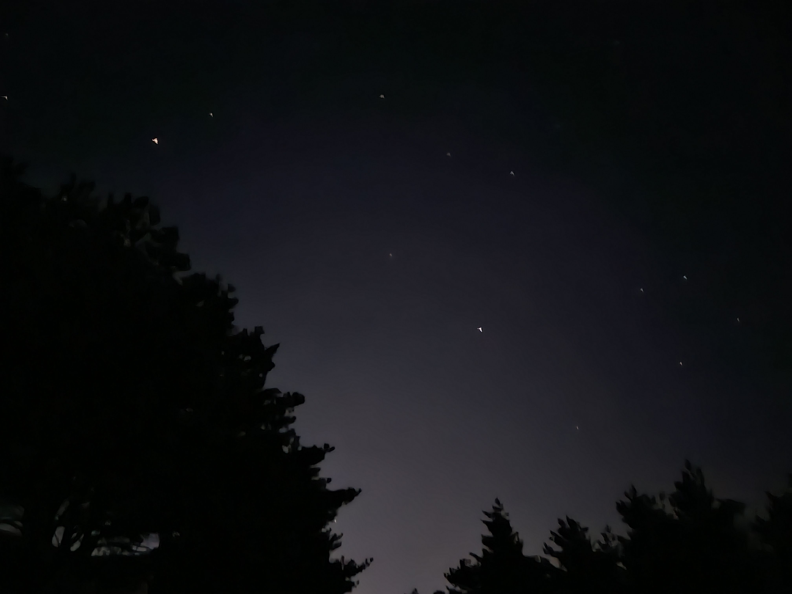

오늘 새벽, 별들이 아주 많이 떨어지는 날이라고 한다. 밤을 꼴딱 새우고 차를타고 깜깜한 곳을 찾아 여기저기 돌아 다녔다. 별이 잘 보이는 명당은 겨울이라 길이 막혀 있었고 한참을 돌아다니다 어느 수련원앞에 정착했다. 하늘을 바라보는데 와... 세상에... 이렇게 많은 별들이 이렇게나 잘 보이다니... 경이롭기도 했지만 바람이 너무 불고 칠흑같은 어둠에 무서워서 급히 돌아가 속초 해변으로 갔다. 그곳에서 한참을 목빠지게 하늘만 바라봤다. 몇십분이 흘렀을까 우와! 별들이 엄청나게 움직이기 시작했다! 이런 광경은 처음봤다. 운전하는 길에 난생처음 고라니를 마주하고 당황하기도 했지만 기분이 아주 좋은 하루였다:)
